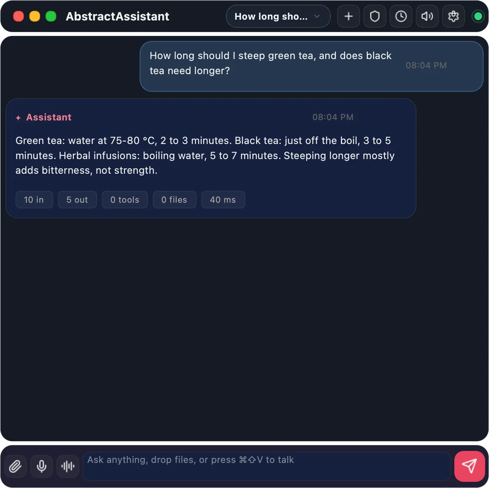
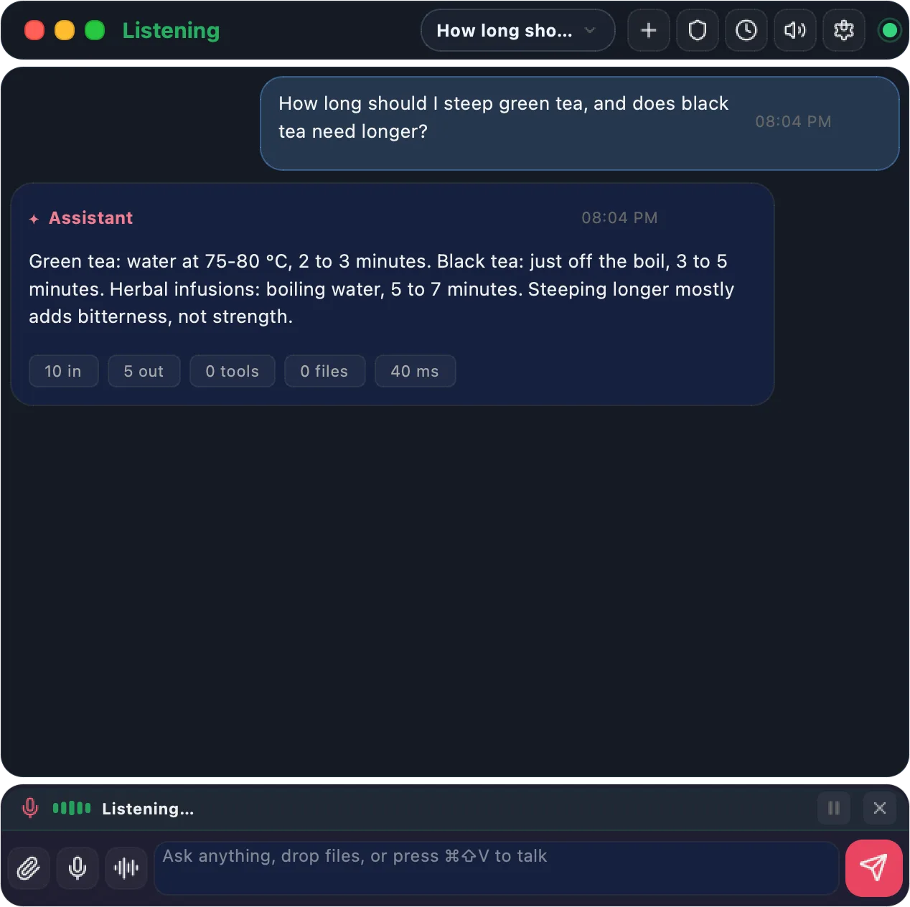
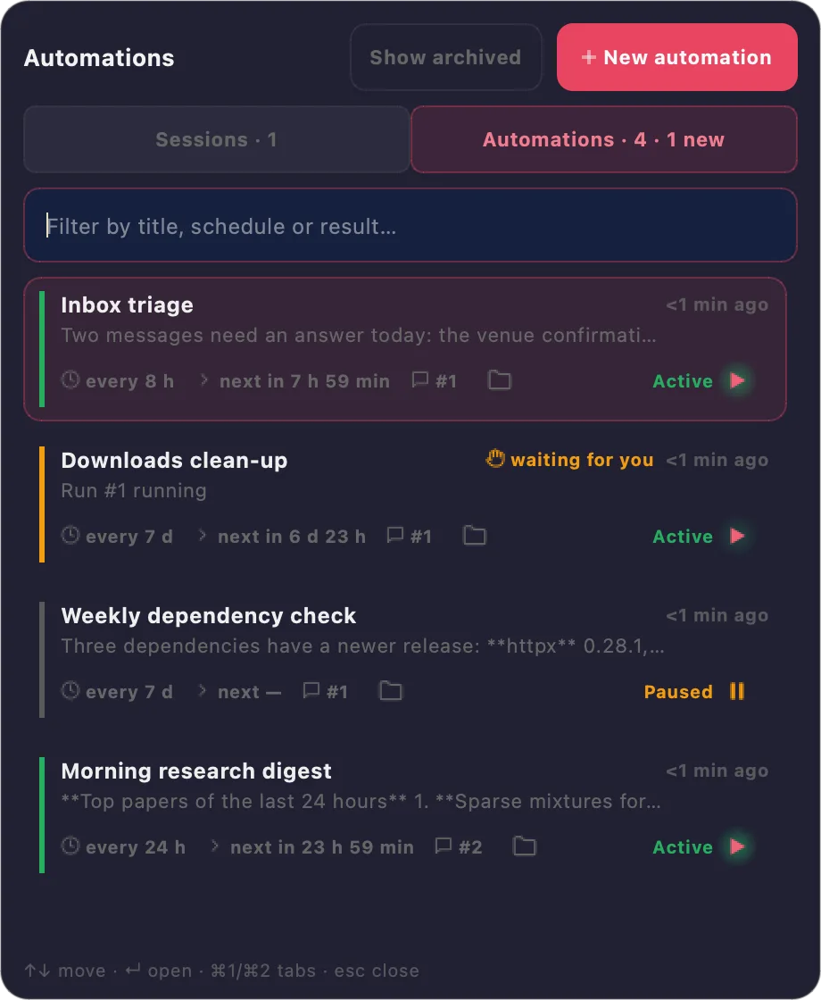
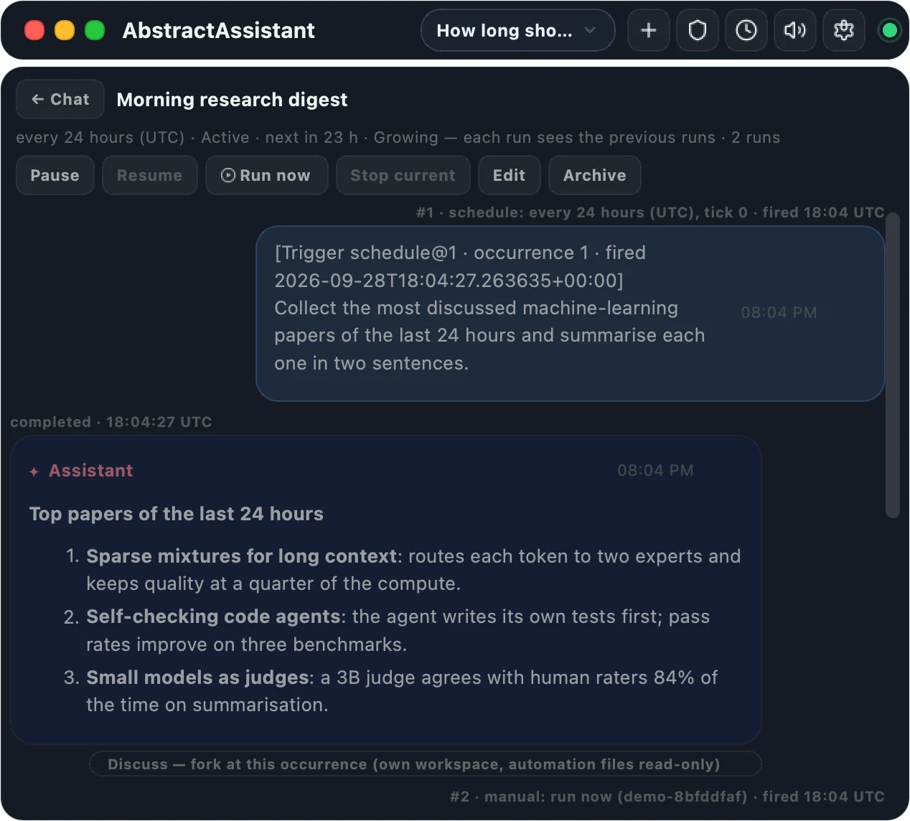
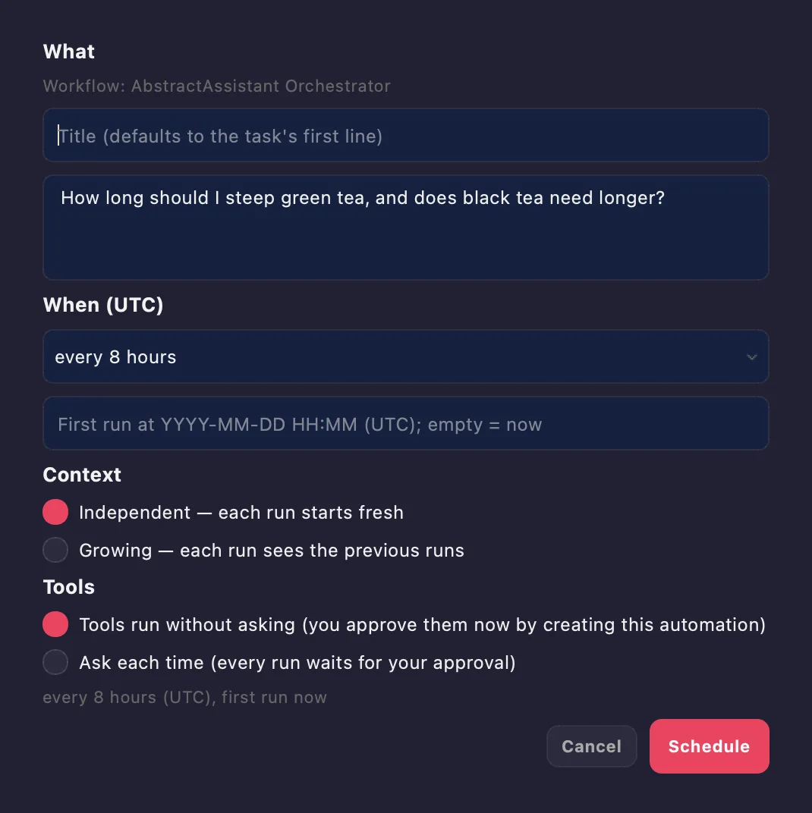
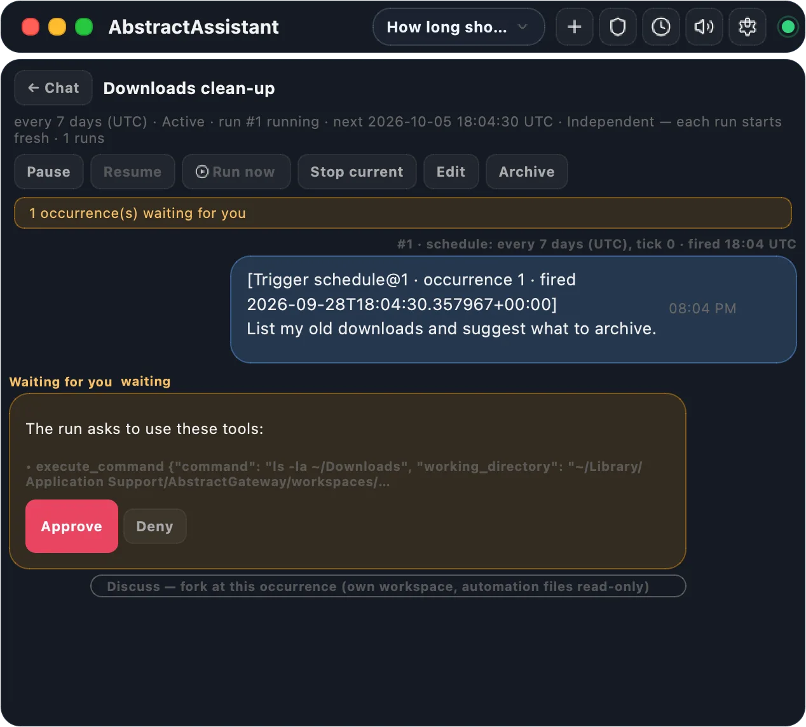
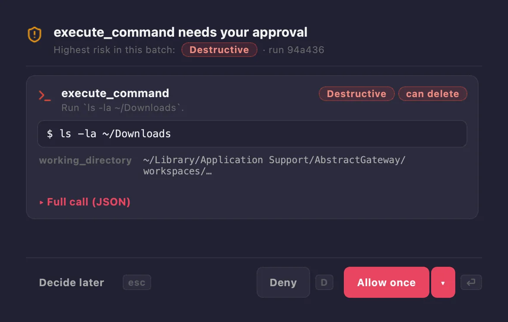
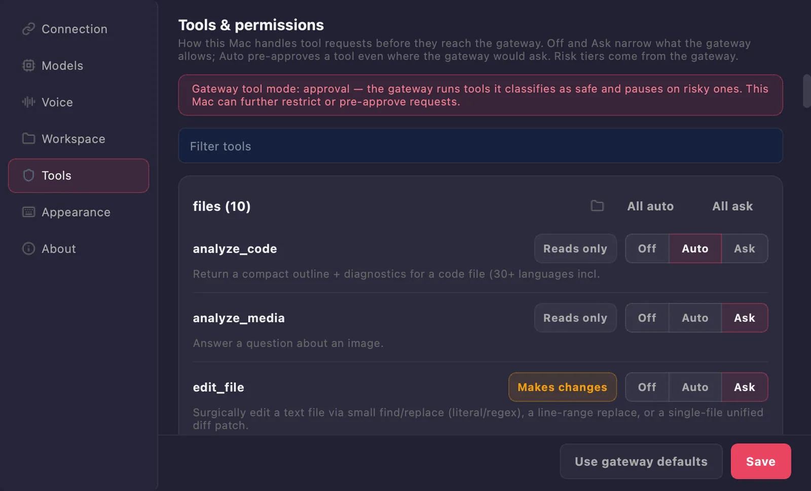

AbstractAssistant
The menu-bar app of AbstractFramework: a compact chat palette, a hands-free voice conversation mode and a small CLI. It is a thin client of AbstractGateway: the gateway runs the workflows, holds the provider connections and executes the tools, and the app keeps only your local preferences and caches. After you install AbstractFramework, the console's Apps page installs the Assistant and opens it already signed in.
pip install "abstractassistant[voice]"
# the menu-bar app
assistant
# one turn in the terminal
assistant run --prompt "Summarize my notes"
# name the gateway and sign in
assistant --gateway-url http://127.0.0.1:8080 \
--gateway-token <token>A thin desktop client of your gateway
AbstractGateway owns workflow discovery, durable runs, provider connections, tool execution and policy, workspace policy and multimodal defaults. The Assistant keeps your preferences, window placement, downloads, a rebuildable cache of your sessions, and the overrides you choose for this app.
Tray / Palette / CLI ──▸ AbstractGateway ──▸ AbstractRuntime ──▸ AbstractCore ──▸ Providers
The palette
Click the menu-bar icon, or press the summon shortcut (⌘⇧Space by default), and the palette opens. Its title says what the app is doing: Running, Reconnecting, Listening, Speaking or Not sent. The header names the current chat, which opens the switcher, and holds the buttons for a new chat, tool permissions, Schedule this conversation…, spoken replies and Settings. The dot on the right shows whether the gateway is reachable.
- Each reply ends with its statistics: tokens, tools, files, duration and model, with detail views
- While a run works, an activity card shows the current step, the elapsed time and recent tool calls, with pause, resume and stop
- With Stream replies on, the answer appears while the model writes it, its reasoning folded under Thinking
- Attach files with the button or drag and drop; typed text during a run steers it
The workflow each turn runs
Each turn runs the gateway's default workflow for the Assistant (abstractassistant.agent.v1). When the gateway sets none, the app runs its built-in orchestrator, abstractassistant-orchestrator, which it publishes to your tenant catalog. You can pick another one in Settings → Models & reasoning → Workflow.
Providers stay on the gateway
You connect local engines and cloud providers, and keep API keys, on the gateway (for example in the console). The Assistant needs no API key or model file. It reads the gateway's providers and models, and you can pin a different one for this app, per route.
Your sessions, from every device
The switcher lists every chat on the gateway, whichever client started it: the Assistant on any Mac, AbstractCode or the Observer. Sessions live on the gateway, so every device shows the same list.
Open it from the console, or install it with pip
You need Python 3.10 or later and an AbstractGateway you can reach. macOS is the primary target; Linux and Windows may work through the Qt shell but are not packaged to the same standard.
# Gateway console > Apps > Assistant card: Install (when it is missing), then Open
# The same from a terminal on the gateway's computer:
abstractgateway apps install assistant
abstractgateway apps launch assistant- Install adds
abstractassistantto the gateway's own Python environment, with everyabstract*package the gateway runs pinned to its current version, so installing the Assistant never changes the gateway. TheabstractframeworkPython package already includes it. - Open starts the Assistant on the gateway's computer, already signed in as you, and the app remembers that sign-in. The console can sign in only an Assistant it launches, so quit a running Assistant before you click Open. From another computer, the card says the Assistant runs on the gateway's computer.
- The gateway's own menu-bar icon has a Launch Assistant entry that finds the app the same way.
pip install "abstractassistant[voice]" # [voice]: adds local speech-to-text
assistant # launch the menu-bar app
assistant run --prompt "What changed in the repo today?"
assistant run --prompt "Explain this error" --stream on
assistant --gateway-url http://127.0.0.1:8080 --gateway-token <token>- The base install covers text chat, spoken replies, gateway-backed media and microphone capture for dictation and voice conversation; the
voiceextra adds local speech-to-text. Speech-to-text and text-to-speech run on the gateway either way. assistant runprints the final answer once on stdout;--stream on|offoverrides the saved Stream replies choice for that turn. The command is also installed asabstractassistant.--gateway-urlalone is enough once you have signed in to that gateway: the app reuses the sign-in saved in~/.abstractassistant/gateway_connection.json.
# From a checkout of the repository
pip install -e ".[macos-app]"
build-macos-app # builds AbstractAssistant.app and installs it into /Applications
build-macos-app --skip-install # leaves it in dist/macos/AbstractAssistant.app- The bundle is unsigned and not notarized: an app you build yourself opens normally, but a copy sent to someone else is blocked by Gatekeeper. It is menu-bar only, so look for its icon in the menu bar, not the Dock.
--gateway-url; the sign-in saved in Settings → Connection; this computer's gateway (with AbstractGateway in the same Python environment, the gateway's own rule; otherwise, as in the app bundle, the local pointer file ~/.abstractframework/gateway.json that the installer and abstractgateway serve write); then http://127.0.0.1:8080. So a gateway that the installer moved off a busy port 8080 is still found. The pointer file never holds a token.Talk to it, hands-free
Microphone capture and playback happen on your Mac; speech-to-text and text-to-speech run on the gateway (the installer gives it local voice through AbstractVoice). Every reply has a speaker button, the composer's microphone dictates into the message, and ⌘⇧V starts a voice conversation.

Listen, send, speak, listen again
Start with ⌘⇧V or the waveform button next to send. A strip above the composer shows a level meter and the state: Listening…, Heard: …, Thinking… (mic paused), Speaking…. Each utterance becomes a turn after a short pause, and spoken replies stream from the gateway, so long answers start playing within about a second.
- The microphone pauses while the assistant works, so side conversation never steers a run
- Short, spoken-style replies by default; typing still works during a conversation
- Barge-in: keep the mic open with headphones and say "stop" to interrupt a reply
- Replies play on the Mac's current output device, or the one you pick in Settings → Voice
Keyboard shortcuts
| Keys | Action |
|---|---|
| ⌘⇧Space | Summon the palette from any app (the default; change it in Settings → Appearance). It works once the app may read the keyboard: System Settings → Privacy & Security → Accessibility / Input Monitoring. |
| ⌘⇧V | Start or end a voice conversation |
| ⌘N · ⌘, | New chat · Settings |
| ⌘. | Stop the running reply |
| ⌘1 · ⌘2 | Switcher tabs: Sessions · Automations |
| Return · Shift+Return | Send · new line |
Your chats and your automations, side by side
Click the chat name in the header. The switcher has two tabs, Sessions | Automations, both fed by the gateway. An automation runs a task on the gateway on a fixed UTC schedule; it keeps running while the Assistant is closed or the Mac sleeps.

One card per automation
Each card shows when the automation last ran, its last result, the schedule, the next run, the run count and the workspace folder, which opens in Finder when it is on this Mac. A chip says "waiting for you" or "failed" only when it applies. The button on the right says the automation's state in words: Active ▶ in green, Paused ⏸ in amber; click it to pause or resume.
- The same automations as AbstractCode and the Observer, whichever app created them
- + New automation for a new task; Show archived for the history
- The tab label and Automations… in the menu-bar icon's menu count what needs you

Open an automation
Click a card and the palette shows the automation in place of the chat; ← Chat returns. Each run reads as a pair of chat turns: what fired it and the task, then the answer. Quiet runs are dimmed, notable results carry a Notified badge, and failures give the gateway's reason and the number of attempts.
| Control | What it does |
|---|---|
| Pause / Resume | No scheduled run until you resume; resuming continues at the next scheduled time |
| Run now | One run immediately; the schedule does not move |
| Stop current | Stops the run in progress |
| Edit | Title, interval and context mode, from the next run |
| Archive | Nothing runs any more; the history is kept (confirmed in the palette) |

Schedule this conversation
The clock button in the header opens Schedule this conversation…, prefilled with the conversation's workflow and its last question, which you can edit. + New automation opens the same window empty.
- When (UTC): every 5 minutes, 30 minutes, hour, 8 hours, 24 hours or 7 days, every N minutes, hours or days, or once at a date and time
- Context: Independent (each run starts fresh) or Growing (each run sees the previous runs)
- Tools: Tools run without asking (creating the automation is your approval) or Ask each time

Answer a run, discuss a result
A run can stop and wait for you. It shows what it waits for: a question with its choices and a free-text answer, a tool approval with Approve / Deny (for automations set to Ask each time), or an event payload typed as JSON.
Discuss under a finished run opens an ordinary chat seeded with the automation's history up to that run. It has its own writable workspace, with the automation's files mounted read-only, and it appears among your chats with the badge about automation <title>.
Tray notifications
You get a notification once for each result the workflow marks as notable, each run that failed after all its retries, and each run waiting for you ("<title> is waiting for you", or "<title> needs your approval"). Ordinary results never notify, and nothing is repeated after a relaunch.
When it checks
The Assistant reads the automation list every 60 seconds while the palette is visible, and every 5 minutes while it is hidden, so a notification reaches you while you work in other apps. Opening an automation marks its new items as seen on every device.
The workspace folder
Every session and automation card has a folder icon for the workspace the gateway reports. It opens in Finder when the folder is on this Mac; until the gateway reports the folder, the icon is disabled and says so.
You decide what runs, and what this app overrides

Tool approvals
When a workflow wants a tool you have not pre-approved, a sheet opens beside the palette. It lists each call with the gateway's risk tier and the command, path or query it will use. Allow once (Return) runs this batch, Deny (⌘D) refuses it, and Decide later (Esc) keeps the run waiting. The palette stays usable while the sheet is open.
- "Always allow … on this Mac" stops the questions for one tool
- "Allow all enabled tools in this chat" trusts a single chat
- Per-tool Off / Auto / Ask in Settings → Tools & permissions

Seven Settings sections
Connection, Models & reasoning (workflow, reasoning effort, reply streaming), Voice, Workspace (root and allowed folders), Tools & permissions, Appearance & window and About. Every value says whether it is the gateway default or this app's override.
Each route the Assistant drives (chat model, voice output and input, image generation, edit and upscale, video, image to video, music, sound effects) has its own Provider and Model lists. The first item is always Gateway default; any other choice is kept on this Mac and sent with each request, and the gateway's shared defaults never change.
A few things to try
Ask a question without typing
- Press ⌘⇧V. The strip reads Listening….
- Ask your question and pause; the strip shows Heard: …, then Thinking… (mic paused).
- The answer is spoken (Speaking…) and the loop listens again for a follow-up.
- Press ⌘⇧V or the strip's ✕ to end.
Turn a conversation into a daily digest
- Ask the question once, for example "Summarise the most discussed machine-learning papers of the last 24 hours."
- Click the clock button: Schedule this conversation… opens with that question as the task.
- Under When (UTC), pick every 24 hours; under Context, Growing.
- Click Schedule. The automation opens in the palette, and its first run is due at once unless you set a first-run time.
Approve a run from the notification
- A notification says "Downloads clean-up needs your approval".
- Choose Automations… in the menu-bar icon's menu (or ⌘2 in the switcher).
- Click the card marked "waiting for you".
- Read the tool call and its arguments, then click Approve or Deny.
Discuss a result
- Open the automation and scroll to the run you want.
- Click Discuss under its answer and type your question in "What do you want to discuss about this result?".
- Click Start. A new chat opens, seeded with the runs up to that one, and stays in your Sessions tab with the badge about automation <title>.
Use another workflow or model for this app
- Press ⌘, and open Models & reasoning.
- Under Workflow, pick another assistant workflow; it applies from the next turn.
- Under the Chat model route, choose a Provider and a Model. Pick Gateway default to follow the gateway again.
What stays on this Mac
The gateway is the source of truth for workflows, provider and model defaults, tools and their approval defaults, workspace policy, run history, sessions, automations and artifacts. The Assistant stores the rest under ~/.abstractassistant/.
| File | Holds |
|---|---|
preferences.json | This app's overrides and preferences: model routes, reasoning effort, reply streaming, workspace grant, voice options, tool modes, hotkey, window size |
gateway_connection.json | Gateway URL and sign-in state |
session_cache.json, sessions/ | A rebuildable cache of the gateway's sessions; the sessions themselves live on the gateway |
automations_notified.json | Which automation notifications were already shown |
| downloads, cached audio | Files fetched from the gateway and spoken replies |
Guides in the repository: Getting started · Voice · Automations · Settings · Installation · Troubleshooting · Changelog